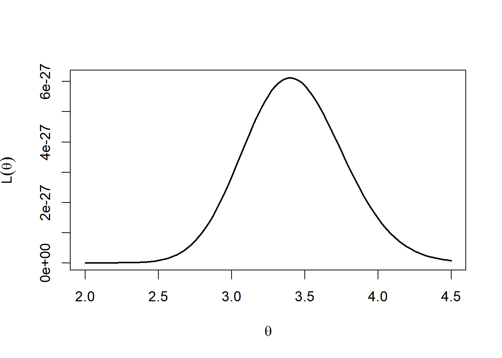
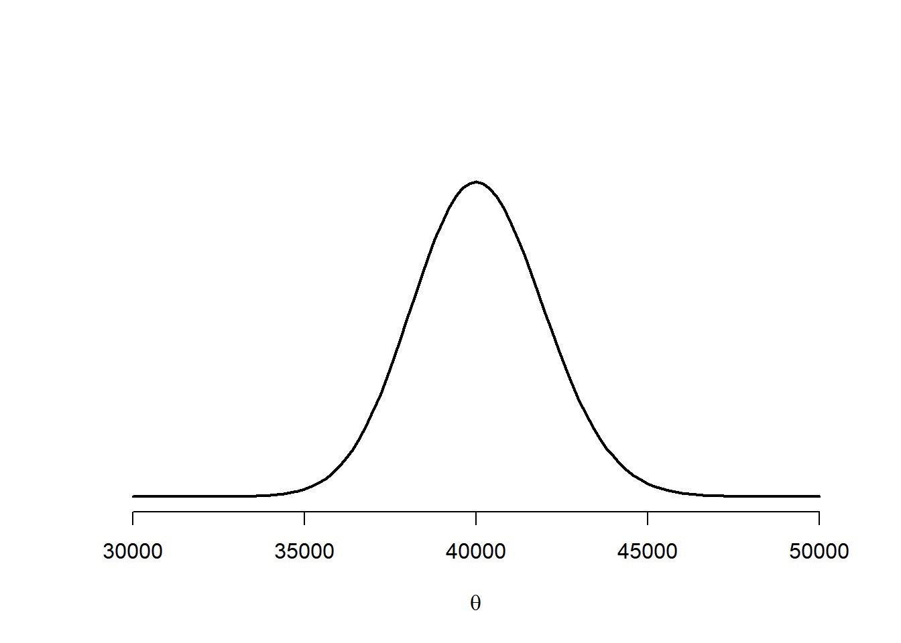
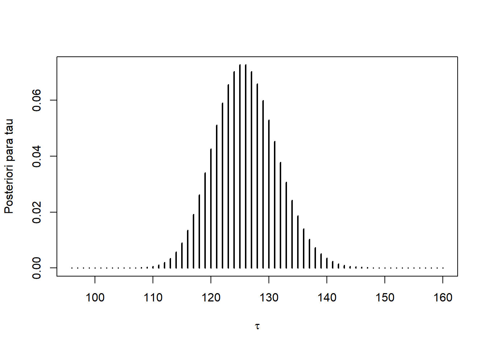

x <- rpois(30,theta)
x [1] 2 4 2 5 6 0 3 5 3 3 6 3 4 3 1 5 2 0 2 6 5 4 3 8 4 4 3 3 2 1Os objetivos desta aula são:
Variáveis aleatórias cujo valor podem ser observados serão denotadas por letras maiúsculas. Exemplos:
\(X\) é número de acidentes diários na Avenida Torquato Tapajós
\(Y\) é o nível máximo diário do Rio Negro
Valores observados de variáveis aleatórias serão denotados pela respectiva letra minúscula.
Parâmetros serão considerados aleatórios, mas serão representados por letras gregas minúsculas, como \(\theta\), \(\lambda\), etc.
Vetores aleatórios serão representados por letras em negrito. Exemplos:
\(\mathbf{X} = \{X_1 , \ldots , X_n \}\) é um vetor de variáveis aleatórias.
\(\mathbf{x} = \{x_1 ,\ldots , x_n \}\) é um vetor observado de variáveis aleatórias.
\(\theta=\{\alpha,\beta\}\) é um vetor de parâmetros.
Definition 2.1 O suporte de uma variável aleatória é o conjunto de todos os seus possíveis valores. Quando necessário, o suporte de variáveis aleatórias são representada pela versão caligráfica de sua letra correspondente.
Exemplos: o suporte de \(X\) é \(\mathcal{X}\) ; o suporte de Y é \(\mathcal{Y}\) ; o suporte de \(Z\) é \(\mathcal{Z}\).
Definition 2.2 O espaço paramétrico é o conjunto de todos os possíveis valores do parâmetro. Eles são representados pela versão maiúscula da letra grega utilizada para seu respectivo parâmetro.
Exemplo: o espaço paramétrico do parâmetro \(\theta\) é representado por \(\Theta\).
Tanto a função de densidade quanto a de probabilidade serão denotadas por funções começando com letras minúsculas. Por exemplo,
\[f(x|\lambda)=\lambda e^{-\lambda x}\] onde \(x,\lambda>0\) é a densidade da distribuição exponencial, enquanto que
\[p(x|\lambda)=\frac{e^{-\lambda}\lambda^x}{x!}\] com \(x\in\mathbb{N}\) e \(\lambda >0\) é a é a função de probabilidade da distribuição Poisson.
Seja \(\mathbf{x} = \{x_1 , \ldots , x_n \}\) uma amostra observada. Supomos que \(\mathbf{x}\) é uma das possíveis amostras das variáveis aleatórias \(\mathbf{X} = \{X_1 , \ldots , X_n \}\). Supomos ainda que \(X\sim F (.|\theta)\). Assim, condicionada ao conhecimento de \(\theta\), a distribuição da amostra está completamente especificada.
::: {#def-Funcao de verossimilhanca} Para \(\mathbf{x}\) fixado, a função \[L:\Theta\Rightarrow [0,\infty)\] é denominada verossimilhança. :::
Sua interpretação é a seguinte: para \(\theta_1,\theta_2\in\Theta\), se
\[L(\theta_1)>L(\theta_2),\] dizemos que \(\theta_1\) é mais verossímil que \(\theta_2\). Isto porque a probabilidade de observar uma amostra na vizinhança de \(\mathbf{x}\) é maior se considerarmos que \(\theta_1\) é o valor do parâmetro. A verossimilhança é uma das fontes de informação utilizada na inferência bayesiana (e a única fonte da inferência frequentista).
Example 2.1 Considere uma amostra de 30 variáveis aleatórias independentes com distribuição Poisson(\(\theta\)). Neste caso, a função de verossimilhança será \[L(\theta)=\frac{e^{-30\theta}\theta^{\sum_{i=1}^{30}x_i}}{\prod_{i=1}^{30}x_i!}.\] Vamos simular uma amostra de tamanho 30 deste modelo (o valor de \(\theta\) será omisso de propósito)
x <- rpois(30,theta)
x [1] 2 4 2 5 6 0 3 5 3 3 6 3 4 3 1 5 2 0 2 6 5 4 3 8 4 4 3 3 2 1A próxima figura mostra os valores da função de verossimilhança para vários valores de \(\theta\) para a amostra observada.
# função de verossimilhança
vero <- function(q){
sapply ( q, function(q) prod(dpois(x, q)) )
}
# gráfico da função de verossimilhança
oo <- par( cex = 1.2)
curve( vero(x),2,4.5, xlab = expression(theta), ylab = expression( L(theta)) , lwd = 2)
par(oo)Podemos notar que o valores mais verossímeis para \(\theta\) estão entre 2 e 4. Podemos ainda procurar o valor mais verossímil, denominado estimativa de máxima verossimilhança (emv). Pode-se mostrar, utilizando cálculo diferencial, que este valor é equivalente à média amostral. Contudo, com o objetivo de utilizar ao máximo o poder computacional que temos disponível, vamos encontrar esse valor utilizando a função optimize.
# menos o logaritmo da função de verossimilhança
lvero <- function(q) -log( vero(q))
# encontrando a emv:
optimise(lvero, c(2,4))$minimum
[1] 3.399981
$objective
[1] 60.35731O valor 2,6 é a estimativa de verossimilhança (este é o valor exato da média amotral). Sob o ponto de vista frequentista, esta seria a nossa estiamtiva para o valor de \(\theta\).
Sob o ponto de vista bayesiano, a informação existente sobre \(\theta\) antes da observação da amostra deve ser levada em consideração. Isto é feito traduzindo tal informação em termos de probabilidades.
Definition 2.3 A distribuição de \(\theta\) é denominada distribuição a priori.
Os parâmetros da distribuição a priori são denominados hiper parâmetros.
As distribuições a priori : * agregam o conhecimento sobre parâmetro antes da observação da amostra (tal conhecimento pode ter sido gerado de uma amostra prévia). * podem ser muito ou pouco informativas, dependendo do grau de crença sobre os valores em particular do espaço paramétrico. Em geral isto é feito alterando a variância da distribuição:
\[\hbox{variância}=\frac{1}{\hbox{precisão}}\]
Sejam \(f(\boldsymbol{\theta})\) a densidade/função para \(\boldsymbol{\theta}\) e \(L(\boldsymbol{\theta})\) a função de verossimilhança.
Como \(\boldsymbol{\theta}\) é considerado aleatório, podemos analisar sua distribuição após observar a amostra \(\boldsymbol{x}\), ou seja \[\boldsymbol{\theta}|\boldsymbol{x}.\]
Esta distribuição é denominada
::: {#thm-Teorema de Bayes}
Seja \(\boldsymbol{x}\) uma amostra observada. Considere a priori \(\theta\sim f(\theta)\) e a verossimilhança \(L(\theta)\). Então a função de densidade (ou probabilidade) de \(\theta|\boldsymbol{x}\) é dada por \[f(\theta|\boldsymbol{x})=\frac{L(\theta)f(\theta)}{f(\boldsymbol{x})}.\] O denominador é denominado distribuição preditiva, sendo igual a \[f(\boldsymbol{x})=\sum_{\theta\in \Theta}L(\theta)f(\theta),\] se \(\theta\) é v.a. discreta ou \[f(\boldsymbol{x})=\int_{\Theta}L(\theta)f(\theta)d\theta\] se \(\theta\) é v.a. contínua. :::
Denominamos por estatística qualquer função da amostra. Utilizamos estatísticas para fazer as seguintes inferências:
Estimação pontual: trata-se de uma estatística com o objetivo de inferir o valor de \(\theta\). Tal estatística é denominada estimador.
Estimação por região: trata-se de uma estatística, digamos \(T(\boldsymbol{X})\), com o objetivo de cobrir o valor de \(\theta\), ou seja, fazer a inferência \(\theta\in T(\boldsymbol{X})\). As estimações intervalares são as mais comuns, nas quais \(T(\boldsymbol{X})=(L(\boldsymbol{X}),U(\boldsymbol{X}))\).
Testes de hipóteses: são estatísticas construídas para decidir se aceitamos a afirmação (hipótese) \(H:\theta\in \Theta_0\), onde \(\Theta_0\) é um subconjunto de \(\Theta\) conhecido por hipótese.
Note que a distribuição a posteriori é função da amostra. Assim, toda função desta distribuição é uma estatística. Assim:
Estimação pontual: em geral é uma medida que representa a região de alta densidade (ou probabilidade) da posteriori. A média da posteriori, assim como a mediana ou a moda são escolhas comuns.
Estimação por regiões: em geral procuramos por uma região \(T\) da posteriori que satisfaça \(P(\theta\in T(\boldsymbol{x})|\boldsymbol{x})=\gamma\), onde \(\gamma\) é denominado nível de credibilidade (não confundir com nível de confiança)
Testes de hipóteses: em geral, aceitamos \(H:\theta\in\Theta_0\) se \(P(H|\boldsymbol{x})\) é elevada.
Note que o Teorema de Bayes deve unir as duas fontes de informação em uma nova fonte, sumarizada pela posteriori.
Não é incomum escolhermos certas prioris que trazem pouca informação, de modo que a moda a posteriori estará concentrada ao redor do estimador de máxima verossimilhança. Contudo, se há informações disponíveis, é recomendável gastar um tempo imaginando como traduzir estas informações em probabilidades. Nestes casos, diremos que a priori será elicitada.
O modo mais usual para a elicitação é encontrar os hiperparâmetros através de estatísticas da informação prévia.
Considere o problema de estimar o número médio de pessoas infectadas pelo vírus da AIDS em 2020 (os dados atuais são de 2018).
O nosso parâmetro de interesse é a média \(\theta>0\).
Abaixo, temos a informação do número de casos registrados nos últimos 10 anos:
library(knitr)
Ano <- 2009:2018
Total <- c(40818,40409, 42355,42086 ,42934,41746,40506,38924,37999,37161)
kable(data.frame(Ano,Total))| Ano | Total |
|---|---|
| 2009 | 40818 |
| 2010 | 40409 |
| 2011 | 42355 |
| 2012 | 42086 |
| 2013 | 42934 |
| 2014 | 41746 |
| 2015 | 40506 |
| 2016 | 38924 |
| 2017 | 37999 |
| 2018 | 37161 |
Podemos considerar a informação anterior para construir nossa priori. A média deve oscilar em torno do total de cada ano. Uma técnica simples e bastante útil é elicitar uma priori que tenha a mesma média e desvio padrão da informação disponível. Temos que
Como \(\theta>0\), podemos pensar em utilizar \(\theta\sim\hbox{Gama}(a,b)\), onde \[E(\theta)=\frac{a}{b}=40.493,09\] e \[\sqrt{Var(\theta)}=\sqrt{\frac{a}{b^2}}=1.927,29.\]
Um pouco de álgebra revela que \[a=441\;,\;b=0,011\]
plot.new()
plot.window( ylim=c(0,.00025), xlim = c(30000,50000) )
curve(dgamma(x, 441, .011), lwd = 2 , add = T)
axis(1)
title( xlab = expression(theta))
É importante notar que a priori depende de um fator subjetivo. No exemplo anterior, você poderia ter utilizado a moda e o desvio padrão para fazer a sua elicitação, ou mesmo alguns quartis. Ou ainda, utilizado uma Weibull ou outra distribuição contínua. Isto teria resultado em prioris diferentes.
Naturalmente, isto nos conduziria a posterioris diferentes. Esta é a principal crítica ao método bayesiano: duas pesquisas com a mesma amostra podem ter resultados distintos, dependendo da priori.
Para evitar resultados discrepantes, temos que garantir que não haja conflitos entre as fontes de informação. Em geral, vamos querer que a posteriori esteja mas próxima da verossimilhança que da priori.
Uma exposição gratuita recebeu vários visitantes em um dia. Nesta exposição existe um livro de visitas, que o visitante pode optar por não assinar. Os organizadores da exposição dizem que
Em um dia foram registrados 96 visitantes no livro. O que podemos dizer sobre o número total de visitantes?
*Tente fazer um palpite sobre este total.**
Você provavelmente chegou em uma solução razoável, utilizando seus conhecimentos matemáticos sobre grandezas proporcionais. Entretanto, para fazer isto, você se utilizou de duas informações que não vieram da amostra! A única informação proveniente da amostra é: 96 visitantes assinaram o livro. Para dificultar um pouco mais, a amostra é de tamanho 1. Este é um exemplo típico no qual a a informação da priori é relevante para fazer inferências.
Solution. Seja \(X\) o número de pessoas que assinaram o livro por dia. Seja \(\tau\) o número de pessoas que visitam a exposição. Seja \(\theta\) a probabilidade de um visitante qualquer assinar o livro. Neste primeiro momento, assuma que \(\theta\) é uma constante igual a \(0,7\) (em outra aula vamos trabalhar com \(\theta\) desconhecido)
O espaço paramétrico de \(\tau\) é \(T=\{0,1,2,\ldots\}\) * O facilitador deve procurar uma distribuição que seja adequada para o espaço \(T\). * Neste exemplo, escolheu-se trabalhar com \(\tau\sim\hbox{Poisson}(a)\) * Lembrando que, em média (a priori) 100 pessoas visitam a exposição por dia, temos \[E[\tau]=a=100.\]
É natural supor que \[f(x|\tau)={\tau \choose x}\left(\frac{7}{10}\right)^x \left(\frac{3}{10}\right)^{\tau-x},\;\; x=0,\ldots,\tau.\] Como observamos \(x=96\), a verossimilhança será
\[\begin{align} L(\tau)=\left\{ \begin{array}{ll}{\tau \choose 96}\left(\frac{7}{10}\right)^{96}\left(\frac{3}{10}\right)^{\tau-96},& \;\; \tau\geq 96\\0,& cc \end{array}\right. \end{align}\]
Pelo Teorema de Bayes,
\[\begin{align} f(\tau|x)&=\frac{L(\tau)f(\tau)}{\sum_{t=0}^{\infty}L(t)f(t)}\\ &=\frac{ {\tau \choose 96}\left(\frac{7}{10}\right)^{96} \left(\frac{3}{10}\right)^{\tau-96}\frac{e^{-100}{100}^\tau }{\tau!}}{\sum_{t=96}^{\infty}{t \choose 96}\left(\frac{7}{10}\right)^{96} \left(\frac{3}{10}\right)^{t-96}\frac{e^{-100} {100}^t }{t!}}\\ &=\frac{{\tau \choose 96}\frac{30^\tau}{\tau!}}{\sum_{t=96}^{\infty}{t \choose 96}\frac{30^t}{t!}}=\frac{\frac{30^\tau}{(\tau-96)!}}{\sum_{t=96}^{\infty}\frac{30^t}{(t-96)!}}=\frac{e^{-30}30^{\tau-96}}{(\tau-96)!}, \end{align}\]
para \(\tau=96,97,\ldots\). Mas, fazendo \(u=t-96\),
\[\begin{align} \sum_{t=96}^{\infty}\frac{30^t}{(t-96)!}&=\sum_{u=0}^\infty \frac{30^{u+96}}{u!}=30^{96}\sum_{u=0}^\infty \frac{30^{u}}{u!}\\ &=30^{96}e^{30}\sum_{u=0}^\infty \frac{e^{-30}30^{u}}{u!}=30^{96}e^{30} \end{align}\]
teremos, \[\begin{align} f(\tau|x)&=\frac{e^{-30}30^{\tau-96}}{(\tau-96)!}, \end{align}\] para \(\tau=96,97,\ldots\).
Portanto, \(\tau|x\) tem distribuição \[f(\tau|x)=\frac{e^{-30}30^{\tau-96}}{(\tau-96)!}.\] e \[\begin{align} E(\tau|x)&=\sum_{\tau=96}^{\infty}\tau\frac{e^{-30}30^{\tau-96}}{(\tau-96)!}=\sum_{u=0}^{\infty}(u+96)\frac{e^{-30}30^{u}}{u!}\\ &=\sum_{u=0}^{\infty}u\frac{e^{-30}30^{u}}{u!}+96\sum_{u=0}^{\infty}\frac{e^{-30}30^{u}}{u!}\\ &=30+96=126 \end{align}\]
Uma estimativa para o número médio de pessoas que visitaram a exposição naquele dia é \[E[\tau|x]=126.\]
plot(96:160,dpois(96:160 - 96, 30), type= 'h',lwd = 2, xlab='',ylab='')
title( xlab = expression(tau), ylab = 'Posteriori para tau')
Resumo da aula 1
Existem duas fontes de informação na inferência bayesiana: os dados (verossimilhança) e a informação anterior (priori)
A informação a priori é subjetiva: pessoas diferentes tem prioris diferentes
O Teorema de Bayes combina as duas fontes em uma nova informação, dada pela distribuição
Os objetivos da inferência (estimação e testes) são feitos a partir da distribuição a posteriori